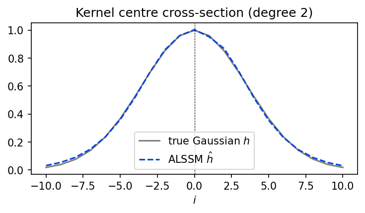
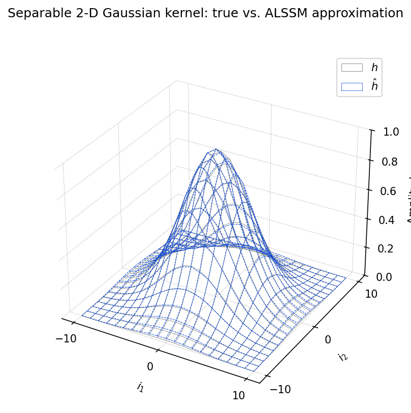

Separable ALSSM Gaussian Kernel via 2-D NDCompositeCost [ex803.0]¶
A 2-D Gaussian smoothing kernel is approximated by a separable Autonomous
Linear State-Space Model (ALSSM). Instead of building the kernel by hand, the
approximation is obtained directly from a 2-D recursive least-squares fit:
two identical one-dimensional CompositeCost terms (a two-sided,
damped-polynomial model) are wrapped in an
NDCompositeCost and fitted to the
true 2-D Gaussian with RLSAlssm.
The state vector at the kernel centre is the Kronecker product of the per-axis
states; rendering the separable ALSSM trajectory over the window reproduces the
approximated kernel hhat. Both the true Gaussian and hhat are then
convolved with an upscaled, noisy "cameraman" image for comparison.
Plot¶



Data¶
This example uses the following data file(s):
{kind=link}
Console Output¶
MSE of 2-D ALSSM kernel vs. true Gaussian: 5.525e-05
MSE between Gaussian- and ALSSM-smoothed images: 3.314e-04
Code¶
#!/usr/bin/env python3
# -*- coding: utf-8 -*-
"""
Separable ALSSM Gaussian Kernel via 2-D NDCompositeCost [ex803.0]
========================================================================
A 2-D Gaussian smoothing kernel is approximated by a separable Autonomous
Linear State-Space Model (ALSSM). Instead of building the kernel by hand, the
approximation is obtained directly from a **2-D** recursive least-squares fit:
two identical one-dimensional [`CompositeCost`][lmlib.statespace.cost.CompositeCost] terms (a two-sided,
damped-polynomial model) are wrapped in an
[`NDCompositeCost`][lmlib.statespace.cost.NDCompositeCost] and fitted to the
true 2-D Gaussian with [`RLSAlssm`][lmlib.statespace.rls.RLSAlssm].
The state vector at the kernel centre is the Kronecker product of the per-axis
states; rendering the separable ALSSM trajectory over the window reproduces the
approximated kernel ``hhat``. Both the true Gaussian and ``hhat`` are then
convolved with an upscaled, noisy "cameraman" image for comparison.
"""
import numpy as np
import matplotlib.pyplot as plt
import scipy.ndimage
import scipy.signal
from numpy.linalg import matrix_power as mpow
import lmlib as lm
# ----------------------------------------------------------------------
# Helpers
# ----------------------------------------------------------------------
def rgb2gray(rgb):
"""Rec. 709 luminance, matching skimage.color.rgb2gray.
Integer images are scaled to [0, 1] first (as skimage's img_as_float does),
so downstream LCR thresholds keep the same meaning.
"""
rgb = np.asarray(rgb)
if np.issubdtype(rgb.dtype, np.integer):
rgb = rgb / np.iinfo(rgb.dtype).max # uint8 JPEG -> [0, 1]
else:
rgb = rgb.astype(float, copy=False)
return rgb[..., :3] @ np.array([0.2125, 0.7154, 0.0721])
# ----------------------------------------------------------------------
# 1. True separable 2-D Gaussian kernel
# ----------------------------------------------------------------------
L = 21
half = L // 2
xx, yy = np.meshgrid(np.linspace(-1, 1, L), np.linspace(-1, 1, L))
std_gauss = 0.5
gauss = np.exp(-(xx ** 2 + yy ** 2) / std_gauss ** 2)
# ----------------------------------------------------------------------
# 2. 2-D fit of the Gaussian with an NDCompositeCost
# ----------------------------------------------------------------------
poly_degree = 2
gamma_r = 0.48
gamma_l = 1.0 / gamma_r
g = 5000
alssm_l = lm.AlssmProd((lm.AlssmExp(gamma=gamma_l), lm.AlssmPoly(poly_degree=poly_degree)))
alssm_r = lm.AlssmProd((lm.AlssmExp(gamma=gamma_r), lm.AlssmPoly(poly_degree=poly_degree)))
segment_l = lm.Segment(a=-half, b=-1, direction=lm.FORWARD, g=g)
segment_r = lm.Segment(a=0, b=half, direction=lm.BACKWARD, g=g)
F = [[1, 0], [0, 1]] # left model on left segment, right on right
ccost = lm.CompositeCost((alssm_l, alssm_r), (segment_l, segment_r), F)
nd_cost = lm.NDCompositeCost([ccost, ccost])
rls2d = lm.RLSAlssm(nd_cost, steady_state=True) # ND filtering requires steady state
rls2d.filter(gauss, dim_order=[0, 1])
xhat = rls2d.minimize_x(solver='lstsq')
xref = xhat[half, half] # Kronecker state at the kernel centre
_, hhat = lm.Trajectory.eval(nd_cost, xref)
mse_kernel = ((hhat - gauss) ** 2).mean()
print(f"MSE of 2-D ALSSM kernel vs. true Gaussian: {mse_kernel:.3e}")
# 1-D cross-section through the kernel centre (a 1-D view of the 2-D fit)
prof_true = gauss[half]
prof_alssm = hhat[half]
# ----------------------------------------------------------------------
# 3. Convolution of an image with the Gaussian Kernel
# ----------------------------------------------------------------------
cameraman = rgb2gray(plt.imread("cameraman.jpg"))
upscale = 5
image = scipy.ndimage.zoom(cameraman, upscale, order=3)
rng = np.random.default_rng(0)
image = image + rng.normal(0.0, std_gauss * 0.5, image.shape)
# xi-only filter for the 2-D convolution (no W / kappa, no steady state needed).
rls2d = lm.RLSAlssm(nd_cost, steady_state=False, calc_W=False, calc_kappa=False, backend='lfilter')
# convolve() filters the image (over both axes) and contracts the per-pixel
# Kronecker state with the centre reference state xref.
image_filtered_alssm = rls2d.convolve(image, xref, dim_order=[0, 1]) / hhat.sum()
# Also convolve with the original image for a ground truth
image_filtered_gauss = scipy.signal.convolve2d(image, gauss, mode='same', boundary='symm') / gauss.sum()
#image_filtered_alssm = scipy.signal.convolve2d(image, hhat, mode='same', boundary='symm') / hhat.sum()
# ----------------------------------------------------------------------
# 4. Figure 1 -- Plot Convolution with an image
# ----------------------------------------------------------------------
print(f"MSE between Gaussian- and ALSSM-smoothed images: "
f"{((image_filtered_gauss - image_filtered_alssm) ** 2).mean():.3e}")
vmin, vmax = 0.0, 1.0
z0, z1 = int(1150 * upscale / 10), int(500 * upscale / 10)
zw = int(200 * upscale / 10)
sl_r = slice(z1, z1 + zw) # rows (image axis 0)
sl_c = slice(z0, z0 + zw) # cols (image axis 1)
fig1, axs = plt.subplots(2, 3, figsize=(9, 6),
gridspec_kw={'height_ratios': [1, 0.85]})
panels = [(image, r'$y$'),
(image_filtered_gauss, r'$y \ast h$'),
(image_filtered_alssm, r'$y \ast \hat{h}$')]
for col, (img, lbl) in enumerate(panels):
ax = axs[0, col]
ax.imshow(img, cmap='gray', vmin=vmin, vmax=vmax)
rect = plt.Rectangle((z0, z1), zw, zw, lw=1, edgecolor='r', facecolor='none')
ax.add_patch(rect)
ax.text(20, 60, lbl, color='w', size=15, va='top')
ax.axis('off')
ax = axs[1, col]
ax.imshow(img[sl_r, sl_c], cmap='gray', vmin=vmin, vmax=vmax)
ax.text(5, 12, lbl, color='w', size=15, va='top')
for s in ax.spines.values():
s.set_color('r')
ax.set_xticks([]); ax.set_yticks([])
fig1.suptitle('2-D convolution: Gaussian vs. ALSSM-approximated Gaussian kernel')
fig1.tight_layout()
# ----------------------------------------------------------------------
# 5. Figure 2 -- Plot 1-D cross-section of the kernel
# ----------------------------------------------------------------------
offsets = np.arange(-half, half + 1)
fig2, ax = plt.subplots(1, 1, figsize=(5, 3))
ax.plot(offsets, prof_true, c='gray', label=r'true Gaussian $h$')
ax.plot(offsets, prof_alssm, c='xkcd:blue', ls='--', label=r'ALSSM $\hat{h}$')
ax.axvline(0, ls='--', lw=0.5, c='k')
ax.set_xlabel(r'$i$')
ax.set_title(f'Kernel centre cross-section (degree {poly_degree})')
ax.legend()
fig2.tight_layout()
# ----------------------------------------------------------------------
# 6. Figure 3 -- Plot 2-D kernel and approximation error
# ----------------------------------------------------------------------
fig3 = plt.figure(figsize=(6, 6))
ax = fig3.add_subplot(projection='3d')
rrk, rrm = np.meshgrid(offsets,offsets)
ax.plot_surface(rrk,rrm, gauss * np.nan, color=[1,1,1,0],cstride=1,rstride=1,edgecolor="xkcd:gray",lw=0.5,shade=False,label=r'$h$',zorder=100) #only legend
ax.plot_surface(rrk,rrm, hhat * np.nan, color=[1,1,1,1],cstride=1,rstride=1,edgecolor='xkcd:blue',lw=0.5,ls='--',shade=False,label=r'$\hat h$',zorder=10)
ax.plot_wireframe(rrk,rrm, gauss, cstride=1,rstride=1,edgecolor="xkcd:gray",ls='-' ,lw=0.5,zorder=11)
ax.plot_wireframe(rrk,rrm, hhat, cstride=1,rstride=1,edgecolor="xkcd:blue",ls='--',lw=0.5,zorder=102)
ax.set_xlabel("$i_1$")
locs, labels = plt.xticks()
plt.xticks(np.arange(-L//2+1,L//2+1,step=L//2).astype(int))
xlabels=ax.get_xticklabels()
ax.set_xticklabels(labels=xlabels,rotation=0, verticalalignment='center', horizontalalignment='center')
ax.set_ylabel("$i_2$")
locs, labels = plt.yticks()
plt.yticks(np.arange(-L//2+1,L//2+1,step=L//2).astype(int))
ylabels=ax.get_yticklabels()
ax.set_yticklabels(labels=ylabels,rotation=0, verticalalignment='center', horizontalalignment='center')
ax.xaxis._axinfo["grid"]['linewidth'] = 0.25
ax.yaxis._axinfo["grid"]['linewidth'] = 0.25
ax.zaxis._axinfo["grid"]['linewidth'] = 0.25
ax.xaxis.set_pane_color((1.0, 1.0, 1.0, 0.0))
ax.yaxis.set_pane_color((1.0, 1.0, 1.0, 0.0))
ax.zaxis.set_pane_color((1.0, 1.0, 1.0, 0.0))
ax.set_zlim([0, 1])
ax.set_zlabel("\n Amplitude",linespacing=0.5)
ax.legend()
fig3.suptitle('Separable 2-D Gaussian kernel: true vs. ALSSM approximation')
plt.show()